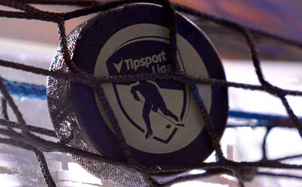
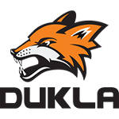

News
Podarí sa Spišskej obhájiť trofej?📢
Play-off dvojice už máme jasné a pozrieť si ich môžete v našom pavúkovi. Minuloročný majster sa popasuje o semifinále s nováčikom z Nitry. Je to rozhodne najvyrovnanejšia séria, ktorá nás v švrťfinále čaká a stojí za to si ju pozrieť. Fanúšikovia sa už isto nemôžu dočkať. Od Spiškej ako bývalého majstra sa očakáva viac ako od nováčika z Nitry. Uvidíme ako sa s tým tlakom vysporiada majster z prvej sezóny. Prvé štvrťfinálové zápasy nám začínaju dnes v nedeľu (20.9.2020) a budú trvať do nasledujúcej nedele (27.9.2020). Tešíme sa na plné štadióny fanúšikov s poriadnou atmosférou🔥 a na hráčov v plnej forme s chuťou sa pobiť o majstra Slovenskej republiky!! Snáď skončí pohár Vladimíra Dzurillu v tých správnych rukách
| Najproduktívnejší hráč | Klub | Body |
|---|---|---|
| Filip Kaštyl | 27 |
| Najlepší strelec | Klub | Góly |
|---|---|---|
| Einari Vuollu | 19 |
| Najlepší brankár | Klub | Úspešnosť |
|---|---|---|
| Harry Hurst |  | 92,70% |
News
Čo sa týka play-off som sa rozhodol byť troška nekompromisný aby nevznikali problémy ako prvú sezónu. Čo to znamená pre vás? Ak sa nestihnú odohrať zápasy vo vopred vypísaných hracích dátumoch tak sa to bude ďalej riešiť už len kontumačne a nebude sa jedna séria naťahovať na viac potrebných dní ako bude potreba. Jednoducho treba byť aktívny ak sa chceme stretávať v tomto turnaji spoločne. Ak niekto nie je aktívny ale aspoň dodržuje pravidlá a nerobí problémy tak je to fajn. Ale ak nedodržuje ani jedno z toho jednoducho bude vylúčený.
Info o play-off a ďalšej sezóne!📢